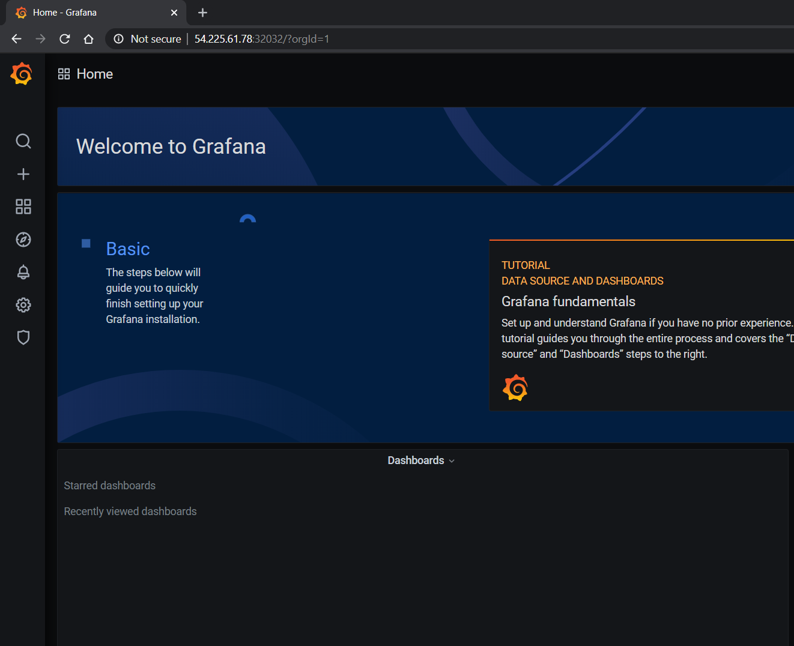
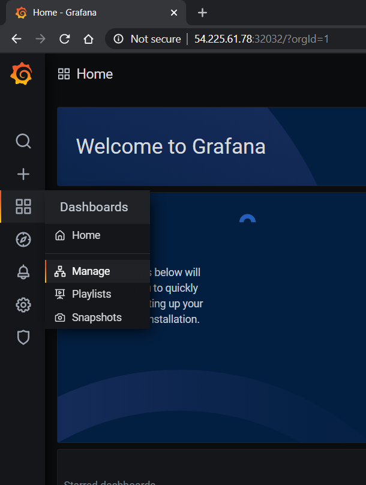
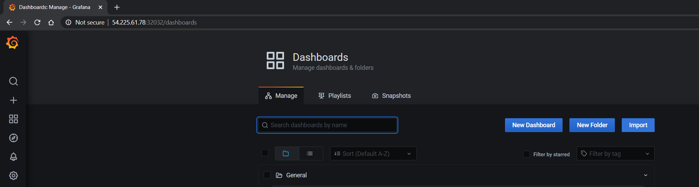
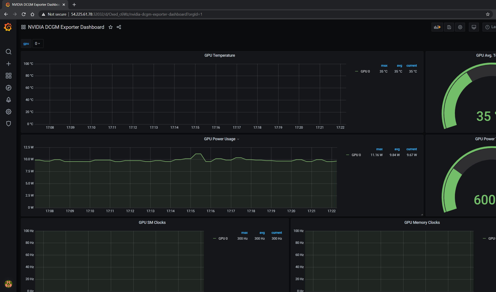
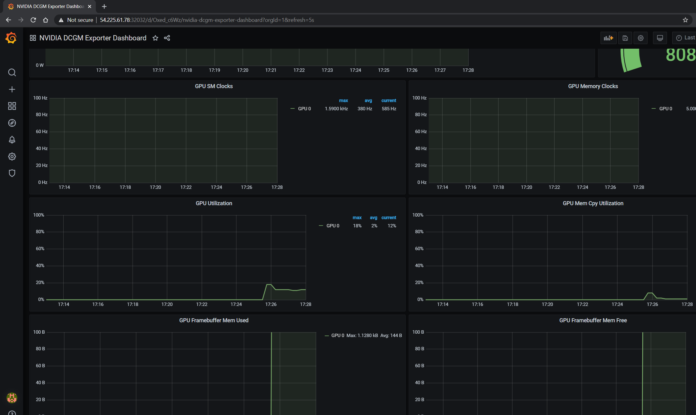
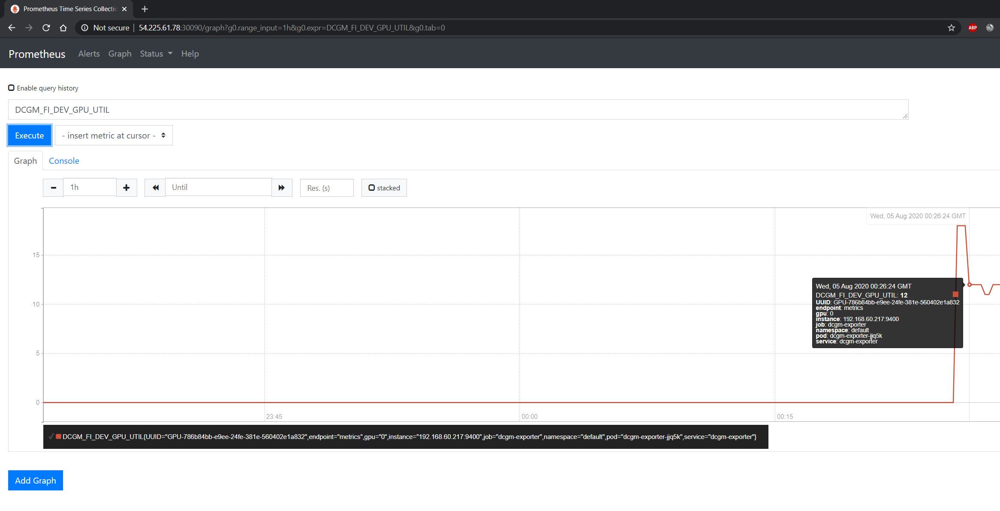

Setting up Prometheus#
About Setting up Prometheus#
Implementing a Prometheus stack can be complicated but can be managed by taking advantage of the Helm package manager and
the Prometheus Operator and kube-prometheus projects.
The Operator uses standard configurations and dashboards for Prometheus and Grafana and the Helm prometheus-operator
chart allows you to get a full cluster monitoring solution up and running by installing Prometheus Operator and the rest of the components listed above.
First, add the helm repo:
$ helm repo add prometheus-community \
https://prometheus-community.github.io/helm-charts
Now, search for the available prometheus charts:
$ helm search repo kube-prometheus
After you locate the version of the chart to use, inspect the chart so we can modify the settings:
$ helm inspect values prometheus-community/kube-prometheus-stack > /tmp/kube-prometheus-stack.values
Next, edit the values file to change the port at which the Prometheus server service is available. In the prometheus instance
section of the chart, change the service type from ClusterIP to NodePort. This will allow the Prometheus server to be accessible at your
machine ip address at port 30090 as http://<machine-ip>:30090/
From:
## Port to expose on each node
## Only used if service.type is 'NodePort'
##
nodePort: 30090
## Loadbalancer IP
## Only use if service.type is "loadbalancer"
loadBalancerIP: ""
loadBalancerSourceRanges: []
## Service type
##
type: ClusterIP
To:
## Port to expose on each node
## Only used if service.type is 'NodePort'
##
nodePort: 30090
## Loadbalancer IP
## Only use if service.type is "loadbalancer"
loadBalancerIP: ""
loadBalancerSourceRanges: []
## Service type
##
type: NodePort
Also, modify the prometheusSpec.serviceMonitorSelectorNilUsesHelmValues settings to false below:
## If true, a nil or {} value for prometheus.prometheusSpec.serviceMonitorSelector will cause the
## prometheus resource to be created with selectors based on values in the helm deployment,
## which will also match the servicemonitors created
##
serviceMonitorSelectorNilUsesHelmValues: false
Add the following configMap to the section on additionalScrapeConfigs in the Helm chart.
## AdditionalScrapeConfigs allows specifying additional Prometheus scrape configurations. Scrape configurations
## are appended to the configurations generated by the Prometheus Operator. Job configurations must have the form
## as specified in the official Prometheus documentation:
## https://prometheus.io/docs/prometheus/latest/configuration/configuration/#scrape_config. As scrape configs are
## appended, the user is responsible to make sure it is valid. Note that using this feature may expose the possibility
## to break upgrades of Prometheus. It is advised to review Prometheus release notes to ensure that no incompatible
## scrape configs are going to break Prometheus after the upgrade.
##
## The scrape configuration example below will find master nodes, provided they have the name .*mst.*, relabel the
## port to 2379 and allow etcd scraping provided it is running on all Kubernetes master nodes
##
additionalScrapeConfigs:
- job_name: gpu-metrics
scrape_interval: 1s
metrics_path: /metrics
scheme: http
kubernetes_sd_configs:
- role: endpoints
namespaces:
names:
- gpu-operator
relabel_configs:
- source_labels: [__meta_kubernetes_endpoints_name]
action: drop
regex: .*-node-feature-discovery-master
- source_labels: [__meta_kubernetes_pod_node_name]
action: replace
target_label: kubernetes_node
Finally, deploy the Prometheus and Grafana pods using the kube-prometheus-stack via Helm:
$ helm install prometheus-community/kube-prometheus-stack \
--create-namespace --namespace prometheus \
--generate-name \
--values /tmp/kube-prometheus-stack.values
Note
You can also override values in the Prometheus chart directly on the Helm command line:
$ helm install prometheus-community/kube-prometheus-stack \
--create-namespace --namespace prometheus \
--generate-name \
--set prometheus.service.type=NodePort \
--set prometheus.prometheusSpec.serviceMonitorSelectorNilUsesHelmValues=false
You should see a console output as below:
NAME: kube-prometheus-stack-1637791640
LAST DEPLOYED: Wed Nov 24 22:07:22 2021
NAMESPACE: prometheus
STATUS: deployed
REVISION: 1
NOTES:
kube-prometheus-stack has been installed. Check its status by running:
kubectl --namespace prometheus get pods -l "release=kube-prometheus-stack-1637791640"
Visit https://github.com/prometheus-operator/kube-prometheus for instructions on how to create & configure Alertmanager and Prometheus instances using the Operator.
Now you can see the Prometheus and Grafana pods:
$ kubectl get pods -A
NAMESPACE NAME READY STATUS RESTARTS AGE
kube-system calico-kube-controllers-8f59968d4-g28x8 1/1 Running 1 23m
kube-system calico-node-zfnfk 1/1 Running 1 23m
kube-system coredns-f9fd979d6-p7djj 1/1 Running 1 23m
kube-system coredns-f9fd979d6-qhhgq 1/1 Running 1 23m
kube-system etcd-ip-172-31-92-253 1/1 Running 1 23m
kube-system kube-apiserver-ip-172-31-92-253 1/1 Running 2 23m
kube-system kube-controller-manager-ip-172-31-92-253 1/1 Running 1 23m
kube-system kube-proxy-mh528 1/1 Running 1 23m
kube-system kube-scheduler-ip-172-31-92-253 1/1 Running 1 23m
kube-system nvidia-device-plugin-1603211071-7hlk6 1/1 Running 0 15m
prometheus alertmanager-kube-prometheus-stack-1603-alertmanager-0 2/2 Running 0 13m
prometheus kube-prometheus-stack-1603-operator-6b95bcdc79-wmbkn 2/2 Running 0 13m
prometheus kube-prometheus-stack-1603211794-grafana-67ff56c449-tlmxc 2/2 Running 0 13m
prometheus kube-prometheus-stack-1603211794-kube-state-metrics-877df67c49f 1/1 Running 0 13m
prometheus kube-prometheus-stack-1603211794-prometheus-node-exporter-b5fl9 1/1 Running 0 13m
prometheus prometheus-kube-prometheus-stack-1603-prometheus-0 3/3 Running 1 13m
Setting up DCGM#
Now, we will deploy DCGM Exporter to gather GPU telemetry. First, lets setup the Helm repo:
$ helm repo add gpu-helm-charts \
https://nvidia.github.io/dcgm-exporter/helm-charts
And then update the Helm repo:
$ helm repo update
DCGM Exporter Helm Chart Customization#
The DCGM-Exporter helm package includes several customization options for various use cases.
- arguments
Customize the command-line parameters passed to dcgm-exporter on startup.
Example: Set the metric collection interval to 1000 milliseconds.
arguments["-c", "1000"]
- extraConfigMapVolumes
Attach ConfigMap volume containing the metrics to the be watched.
Example: Attach the ‘exporter-metrics-config-map’ volume to the pod.
extraConfigMapVolumes: - name: exporter-metrics-volume configMap: name: exporter-metrics-config-map
- extraEnv
Customize environment variables, including and especially the DCGM-Exporter variables.
Example: Collect the metrics specified in the ConfigMap `exporter-metrics-volume`.
extraEnv: - name: DCGM_EXPORTER_CONFIGMAP_DATA value: "default:exporter-metrics-volume"
Install the DCGM Exporter chart:
$ helm install \
--generate-name \
gpu-helm-charts/dcgm-exporter
Now, you can observe the DCGM Exporter pod:
$ kubectl get pods -A
NAMESPACE NAME READY STATUS RESTARTS AGE
default dcgm-exporter-2-1603213075-w27mx 1/1 Running 0 2m18s
kube-system calico-kube-controllers-8f59968d4-g28x8 1/1 Running 1 43m
kube-system calico-node-zfnfk 1/1 Running 1 43m
kube-system coredns-f9fd979d6-p7djj 1/1 Running 1 43m
kube-system coredns-f9fd979d6-qhhgq 1/1 Running 1 43m
kube-system etcd-ip-172-31-92-253 1/1 Running 1 43m
kube-system kube-apiserver-ip-172-31-92-253 1/1 Running 2 43m
kube-system kube-controller-manager-ip-172-31-92-253 1/1 Running 1 43m
kube-system kube-proxy-mh528 1/1 Running 1 43m
kube-system kube-scheduler-ip-172-31-92-253 1/1 Running 1 43m
kube-system nvidia-device-plugin-1603211071-7hlk6 1/1 Running 0 35m
prometheus alertmanager-kube-prometheus-stack-1603-alertmanager-0 2/2 Running 0 33m
prometheus kube-prometheus-stack-1603-operator-6b95bcdc79-wmbkn 2/2 Running 0 33m
prometheus kube-prometheus-stack-1603211794-grafana-67ff56c449-tlmxc 2/2 Running 0 33m
prometheus kube-prometheus-stack-1603211794-kube-state-metrics-877df67c49f 1/1 Running 0 33m
prometheus kube-prometheus-stack-1603211794-prometheus-node-exporter-b5fl9 1/1 Running 0 33m
prometheus prometheus-kube-prometheus-stack-1603-prometheus-0 3/3 Running 1 33m
You can view the services setup as part of the operator and DCGM Exporter:
$ kubectl get svc -A
NAMESPACE NAME TYPE CLUSTER-IP EXTERNAL-IP PORT(S) AGE
default dcgm-exporter-2-1603213075 ClusterIP 10.104.40.255 <none> 9400/TCP 7m44s
default kubernetes ClusterIP 10.96.0.1 <none> 443/TCP 49m
kube-system kube-dns ClusterIP 10.96.0.10 <none> 53/UDP,53/TCP,9153/TCP 48m
kube-system kube-prometheus-stack-1603-coredns ClusterIP None <none> 9153/TCP 28m
kube-system kube-prometheus-stack-1603-kube-controller-manager ClusterIP None <none> 10252/TCP 28m
kube-system kube-prometheus-stack-1603-kube-etcd ClusterIP None <none> 2379/TCP 28m
kube-system kube-prometheus-stack-1603-kube-proxy ClusterIP None <none> 10249/TCP 28m
kube-system kube-prometheus-stack-1603-kube-scheduler ClusterIP None <none> 10251/TCP 28m
kube-system kube-prometheus-stack-1603-kubelet ClusterIP None <none> 10250/TCP,10255/TCP,4194/TCP 28m
prometheus alertmanager-operated ClusterIP None <none> 9093/TCP,9094/TCP,9094/UDP 28m
prometheus kube-prometheus-stack-1603-alertmanager ClusterIP 10.100.20.237 <none> 9093/TCP 28m
prometheus kube-prometheus-stack-1603-operator ClusterIP 10.111.1.27 <none> 8080/TCP,443/TCP 28m
prometheus kube-prometheus-stack-1603-prometheus NodePort 10.99.188.46 <none> 9090:30090/TCP 28m
prometheus kube-prometheus-stack-1603211794-grafana ClusterIP 10.109.219.60 <none> 80/TCP 28m
prometheus kube-prometheus-stack-1603211794-kube-state-metrics ClusterIP 10.103.250.41 <none> 8080/TCP 28m
prometheus kube-prometheus-stack-1603211794-prometheus-node-exporter ClusterIP 10.108.225.36 <none> 9100/TCP 28m
prometheus prometheus-operated ClusterIP None <none> 9090/TCP 28m
You can observe that the Prometheus server is available at port 30090 on the node’s IP address. Open your browser to http://<machine-ip-address>:30090.
It may take a few minutes for DCGM to start publishing the metrics to Prometheus. The metrics availability can be verified by typing DCGM_FI_DEV_GPU_UTIL
in the event bar to determine if the GPU metrics are visible:
{kind=link}
Using Grafana#
You can also launch the Grafana tools for visualizing the GPU metrics.
There are two mechanisms for dealing with the ports on which Grafana is available - the service can be patched or port-forwarding can be used to reach the home page. Either option can be chosen based on preference.
Patching the Grafana Service#
By default, Grafana uses a ClusterIP to expose the ports on which the service is accessible. This can be changed to a NodePort instead, so the page is accessible
from the browser, similar to the Prometheus dashboard.
You can use kubectl patch to update the service API
object to expose a NodePort instead.
First, modify the spec to change the service type:
$ cat << EOF | tee grafana-patch.yaml
spec:
type: NodePort
nodePort: 32322
EOF
And now use kubectl patch:
$ kubectl patch svc kube-prometheus-stack-1603211794-grafana \
-n prometheus \
--patch "$(cat grafana-patch.yaml)"
service/kube-prometheus-stack-1603211794-grafana patched
You can verify that the service is now exposed at an externally accessible port:
$ kubectl get svc -A
NAMESPACE NAME TYPE CLUSTER-IP EXTERNAL-IP PORT(S) AGE
<snip>
prometheus kube-prometheus-stack-1603211794-grafana NodePort 10.109.219.60 <none> 80:30759/TCP 32m
Open your browser to http://<machine-ip-address>:30759 and view the Grafana login page. Access Grafana home using the admin username.
The password credentials for the login are available in the prometheus.values file we edited in the earlier section of the doc:
## Deploy default dashboards.
##
defaultDashboardsEnabled: true
adminPassword: prom-operator
{kind=link}
Port Forwarding#
Another method to access the Grafana page would be to use port forwarding.
First, it can be observed that the Grafana service is available at port 80. We will need to port-forward the service from an arbitrary port - in this example, we will forward from port 32322 on our local machine to port 80 on the service (which in turn will forward to port 3000 that the Grafana pod is listening at, as shown below):
$ kubectl port-forward svc/kube-prometheus-stack-1603211794-grafana -n prometheus 32322:80
Forwarding from 127.0.0.1:32322 -> 3000
Forwarding from [::1]:32322 -> 3000
Handling connection for 32322
If your cluster is setup on a cloud instance e.g. AWS EC2, you may have to setup an SSH tunnel between your local workstation and the instance using
port forwarding to view the Grafana tool in your local workstation’s browser. For example, on Windows you can use PuTTY to open an SSH tunnel and specify the
source port as 32322 and destination as localhost:32322 under the Tunnels sub-menu in the SSH menu.
Open your browser and point to http://localhost:32322/ to view the Grafana login page using the same credentials in the previous section.
DCGM Dashboard in Grafana#
To add a dashboard for DCGM, you can use a standard dashboard that NVIDIA has made available, which can also be customized.
{kind=link}
To access the dashboard, navigate from the Grafana home page to Dashboards -> Manage -> Import:
 {kind=link}
{kind=link}
Import the NVIDIA dashboard from https://grafana.com/grafana/dashboards/12239
and choose Prometheus as the data source in the drop down:
{kind=link}
{kind=link}
The GPU dashboard will now be available on Grafana for visualizing metrics:
{kind=link}
Viewing Metrics for Running Applications#
In this section, let’s run a more complicated application and view the GPU metrics on the NVIDIA dashboard.
We can use the standard DeepStream Intelligent Video Analytics Demo available on the NGC registry. For our example, let’s use the Helm chart to use the WebUI:
$ helm fetch https://helm.ngc.nvidia.com/nvidia/charts/video-analytics-demo-0.1.4.tgz && \
helm install video-analytics-demo-0.1.4.tgz --generate-name
NAME: video-analytics-demo-0-1596587131
LAST DEPLOYED: Wed Aug 5 00:25:31 2020
NAMESPACE: default
STATUS: deployed
REVISION: 1
NOTES:
1. Get the RTSP URL by running these commands:
export NODE_PORT=$(kubectl get --namespace default -o jsonpath="{.spec.ports[0].nodePort}" services video-analytics-demo-0-1596587131)
export NODE_IP=$(kubectl get nodes --namespace default -o jsonpath="{.items[0].status.addresses[0].address}")
echo rtsp://$NODE_IP:$NODE_PORT/ds-test
2.Get the WebUI URL by running these commands:
export ANT_NODE_PORT=$(kubectl get --namespace default -o jsonpath="{.spec.ports[0].nodePort}" services video-analytics-demo-0-1596587131-webui)
export NODE_IP=$(kubectl get nodes --namespace default -o jsonpath="{.items[0].status.addresses[0].address}")
echo http://$NODE_IP:$ANT_NODE_PORT/WebRTCApp/play.html?name=videoanalytics
Disclaimer:
Note: Due to the output from DeepStream being real-time via RTSP, you may experience occasional hiccups in the video stream depending on network conditions.
The demo can be viewed in the browser by pointing to the address following the instructions above.
The GPU metrics are also visible either in the Grafana dashboard or the Prometheus dashboard as can be seen in the following screenshots showing GPU utilization, memory allocated as the application is running on the GPU:
 {kind=link}
{kind=link}